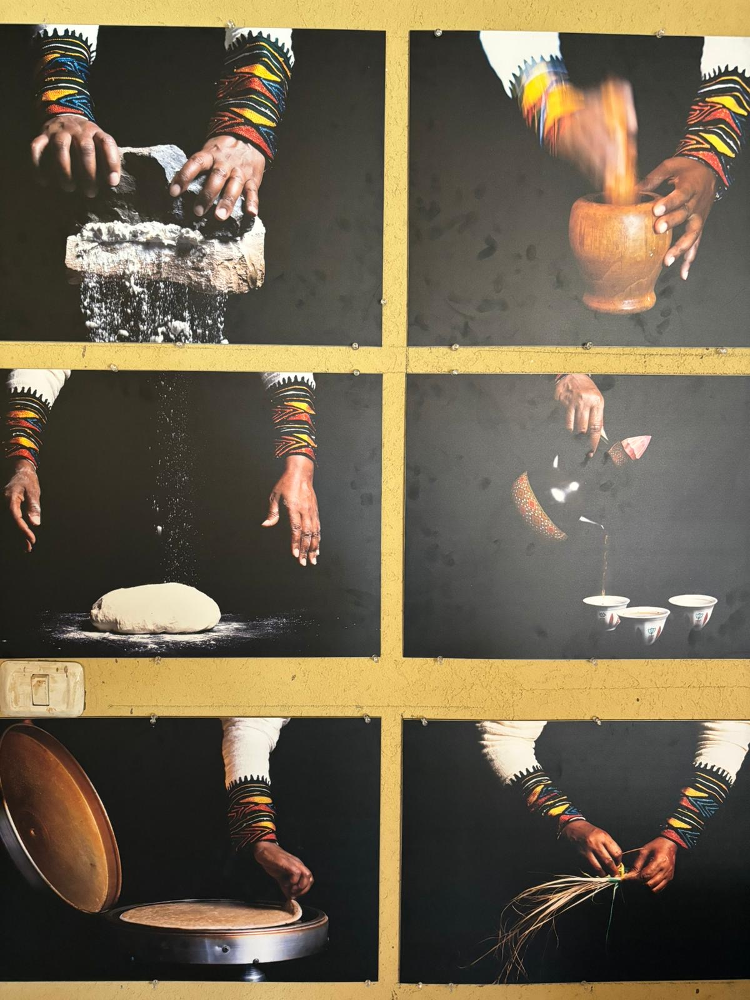
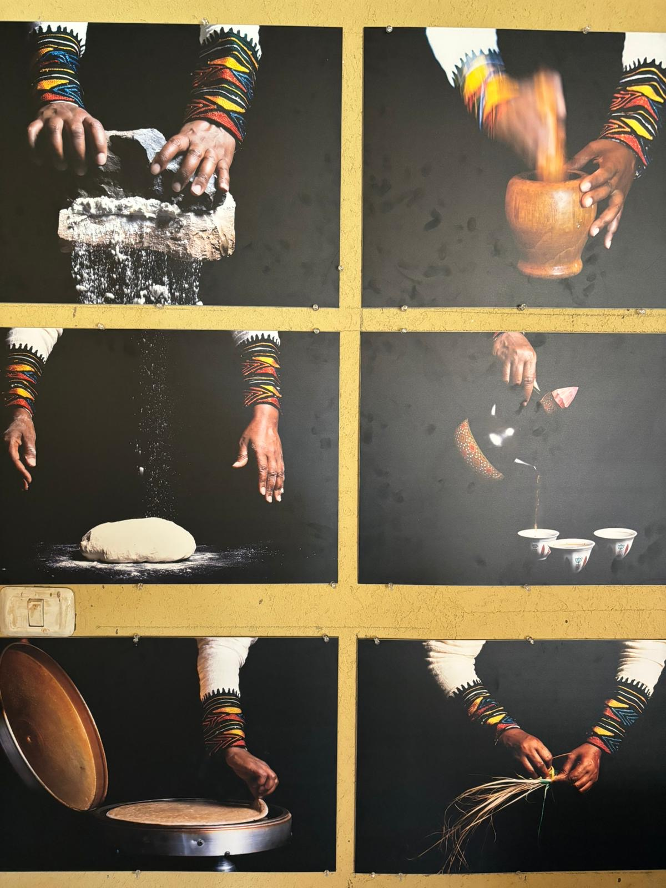

Yonathan 35 from Ra'anana,
Works in the field of sales.
A fan of Maccabi and I mean Haifa yes?
Likes to watch football games, play sports,
And see all the marvell movies that exist.
And now that you know me
I would like you to join me for a visit to Beta Israel village
Located in Kiryat Gat
To understand how my parents and Ethiopian Jews lived
Something that always crossed my mind
Let's start
The Jewish community in Ethiopia Beta Israel, cites various traditions as to their origins.
One tradition maintains that Jews arrived in Ethiopia in waves, mainly via the Nile and its tributaries.
Other traditions associate the Jews’ arrival in Ethiopia with the story in the Ethiopian national opus “Kebra Nagast” of the procession of Menelik I, the son of King Solomon and the Queen of Sheba.
The Beta Israel, or Ethiopian Jews, are an African community of the Jewish diaspora. They coalesced in the Kingdom of Aksum and the Ethiopian Empire, which is currently divided between the Amhara Region and Tigray Region in modern-day Ethiopia.
After the founding of the State of Israel in 1948, most of the Beta Israel immigrated to Israel or were evacuated from Africa through several initiatives by the Israeli government.
Historically, Beta Israel lived in northern and northwestern Ethiopia, where they were spread out across more than 500 small villages over a wide territory, alongside predominantly Christian and Muslim populations.
Most of them were concentrated mainly in what is today North Gondar Zone, Shire Inda Selassie, Wolqayit, Tselemti, Dembia, Segelt, Quara, and Belesa.
For at least a millennium, Beta Israel appears to have been isolated from the more mainstream Jewish communities, and practice a non-Talmudic form of Judaism that is similar in some respects to Karaite Judaism.
We started our visit wearing traditional Ethiopian clothing
"Gabi" – Gabi is a scarf or cloak of men. to make at least two fabrics together on top.
And the women have a dress system consisting of three items: "kamis"(dress that is a type of cloak) "from Kent" (sash) and "Natale" or "Agademia" (shoulder shell).
The edges of the campfire had colorful decorative stripes. The most striking feature of these robes is the work of the tissue.

After getting dressed we moved to the Bona ritual
Bona is the name of the traditional coffee drinking ceremony in Ethiopian society.
The bona drinking ritual has a high social importance.
The bona has two roles:
Social function - the bona is served to each guest as part of hospitality. It is drunk at family gatherings, events and holidays.
Spiritual function - the bona is a ritual to drive away evil spirits and heal sick people.
After dressing in traditional clothes,We performed the bona ritual.
And we ate the traditional food. It's time to enter the Traditional Homes & Huts of Ethiopia
Round thatched roof huts with mud-plastered or woven walls, Stacked morterless stone walled homes & houses,
Extended family enclosed farm complexes; walled courtyard farms, are the most common structures.
Thatched roofs are made from grass, cut at the end of the wet season.
Walls may vary from sticks, to coarse planks or mud-plastered walls to very sophisticated morterless stacked walls and mud-covered roofs.
And after all we just have to go outside.
Get some vitamin d from the sun,
And see all the agricultural crops
Who are raised in the agricultural area outside
In the past traditional agriculture was mainly based on hard manual labor and manpower.
Agriculture in Ethiopia dealt mainly with field crops (such as corn wheat teff sorghum and more).
Each family had a plot of land where they grew for their own purpose only compared to modern agriculture today
where large quantities are grown for commercial and marketing purposes.
In Ethiopia they used tools such as an armory (a plow towed by oxen) that prepares the land
for sowing the farmers weeded with their own hands and turned the land with the help of a matrabia (knife) and then began the work of sowing in the fields.
At the end of the hard work all that remains is to pray to God to rain blessing rains on which the entire crop depends and to wait patiently for the growth of the crops.
When the harvest season came they harvested the grain using a 'machid' (sickle) and went out dancing and singing thanksgiving to God for the yield of the field.
 
